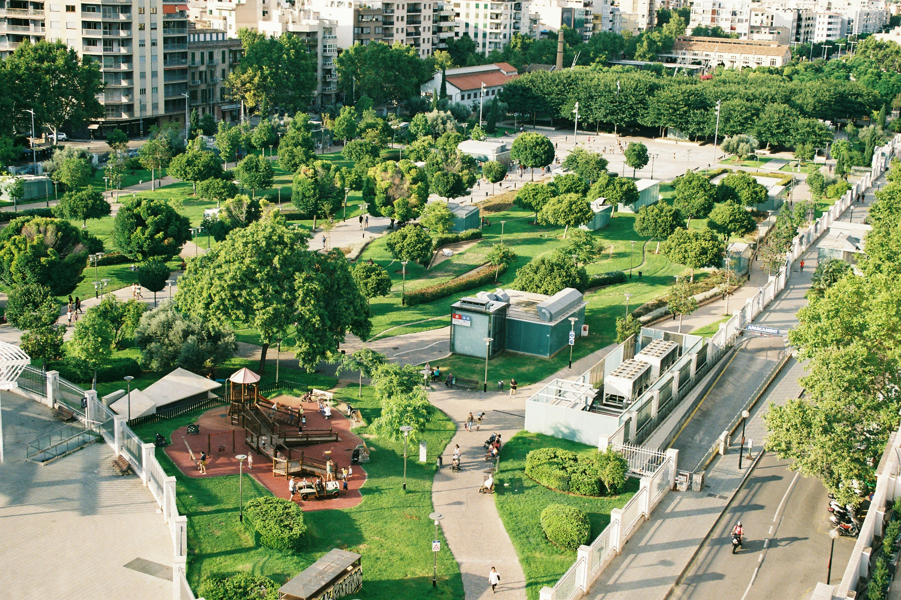

Strategy
A Conceptual Framework for Quiet
AcoustiNet proposes an approach to managing the sounds of our city, focusing on specific urban needs.

Spotlighting Quiet Zones
Not every park or library is the same. Mapping out specific areas that serve as peaceful places for the community can be useful when these spaces are categorized based on their primary use, whether it's for study, relaxation, or nature preservation.
Goal: To create a catalog of silence that helps residents find the right environment for their needs.

Data-Driven Awareness
By proposing a network of non-intrusive sensors, we can visualize the invisible. Our dashboard concept doesn't just show numbers; it tells the story of a space’s daily cycle, helping users see when a location is at its most peaceful.
Goal: To give people information, allowing them to make informed choices about where they spend their time.
Sustainable City Planning
Finally, we use this collected data to propose long-term changes. This could include suggestions for better traffic flow around hospitals or the addition of natural sound barriers like hedges and water features to drown out background drone.
Goal: To move from monitoring noise to actively designing the city's soundtrack for better health.